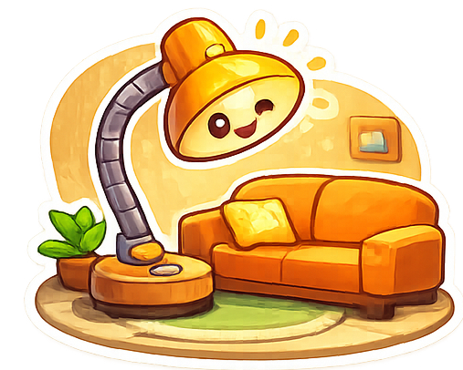
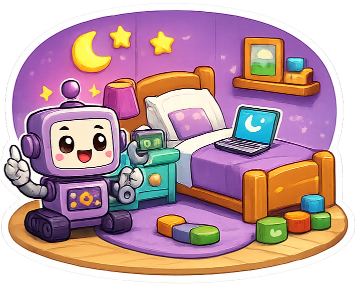
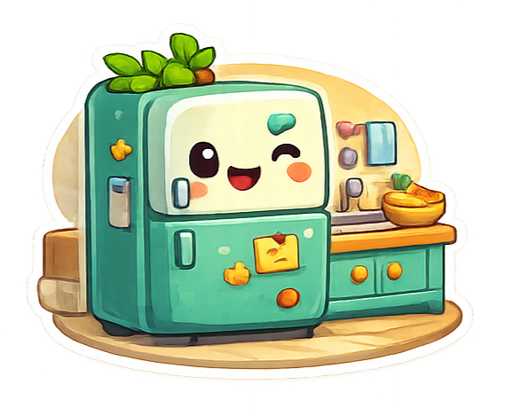

Sala
🔍 Aventura de lógica

Olá! Eu sou o Logi, seu guia investigador! Prontos para resolver os mistérios da casa?
Cômodos da Casa

Sala

Quarto

Cozinha

Despensa
2º e 3º ano do Ensino Fundamental